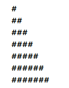
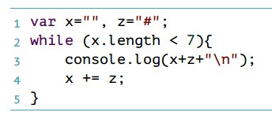
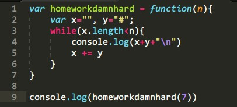
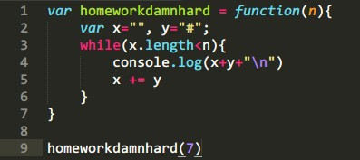
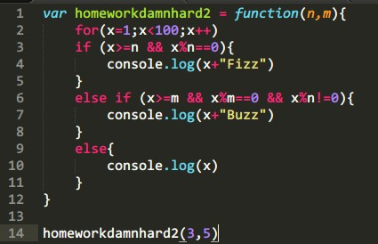

随波逐流（3）——别倒下
持续不断的学习是如此重要，只有记录了曾经的事，才能知道现在的自己于曾经的自己有多么不同，是怎样的向上努力着。
这一周的事情实在是太多了，豆瓣的征文又没写成，关于 js 的部分也没有搞懂太多，仿佛进入了一个瓶颈。着凉，嗓子难受，肺出气不易。我知道明后天就会好，但这个周末却着实什么都没做成，光睡觉了。昨天（周六）下午在群里跟「弦子」还说睡半个小时就能起来，然后精神一下午，结果呢，15点躺下，19点才起来，嗓子还是难受，不想动。
刚刚从旧时光的褪色影像中走出来，有好多恢复正常生活节奏的事情要做。论坛上推的帖子被主编搞到了公众号里，三天前的点击量过万，对于这个180万人口的城市，着实不易。
人，还是要稳下来，稳中求胜，一点点累积。不能去一个不知名的远方公司冒险，危险系数太高，以及无尽的加班。好歹积累一年经验，然后再看看其他地方有没有适合的位置。
狗跑丢了。从上午10点开始找，找到晚上8点，累计走了20公里，还是没有。
疲惫，腰酸腿疼，感冒加重。
难挨的日子，绝望蔓延，如没有希望一般的等待。
.x 和 [x]
.x 的 x 必须是 valid 的变量名，所以当确定某个对象有x属性的时候，为了简便，就要使用.x，但是如果 x 不是一个 valid 的变量名，或者需要「运算」然后把结果赋予这个属性，那么就用「x」，这个上周没有读懂，这周终于读懂了。
数组
[x0,x1,x2]，数组中，第一位的 index 是0。
随波逐流（2）——书读百遍，举一反三

前端的浪潮实在太快，跳进去只能随波逐流。
这是从过去的失败日子里收获的教训，只有实践了才会知道这个世界是怎么样的，宅在家中想，觉得自己什么都行，真的没什么价值，不仅没有普世价值，连现在的自己回望从前的自己时，都有一种恍然的感觉。
生活何尝不是一种修行，在没有能力的时候，先随波逐流没什么不好。当然，也许不会有现在的心境，但如果另一条时间线上的我在毕业时就选择了辛勤工作，心境就比现在的要差吗？
不好说
这周包括未来几周都要暂时搁置 css 和 html，开始系统的学习 javascript，在横拉窗口的时候发现博客的「Email 块」竟然没有 float:right ，我也不知道当时是怎么想的。
Parameter 的 variable 本质
Eloquent Javascript 是非常不错的 js 教程，简明易懂，比如在说「数据类型」的时候，就讲到数据类型的来源是什么。而在讲解 function 的 parameter 的时候，也是深入浅出的解释道——parameter 其实就是 function 中 variables，并且这个 variable 的值是由 caller 赋予的。当时看第一边的时候真的没懂，正如我在知乎的某个答案说学习 null undefined false NaN 之间的关系的时候，陆续看了三遍，function 显然是 js 的重点，看不懂就再看，三遍不行就四遍、五遍，终于看懂了。parameter 不仅仅是一个 function 内的 variable,更是一个由 caller 控制的 variable，所以 function 内一定不能将 parameter 绑定在一个自己不想控制的 variable 上。
null 与 0
null 只等于 undefined 或者 null 本身，而 null*8 = 0 是因为类型强制（type coercion），为了计算，js 必须将 null 转换成数值，null 转换成数值就是 0。
for 循环
for(var x= 1; x < 10; x++)
必须有三项 parameter，除了最后一项 parameter 之外，其他的 parameter 即使不想设置也必须用 "" 即空值来表示，不然 js 的自动不全会导致 parameter 的对应关系错乱。
function 是难点
var x= function(y) 和 function x(y) 是同时允许的。逻辑上有些不同，本书的后面又说了 Closure 和 Recursion 等问题，云山雾罩的，让我一个程序小白理解这些问题真的很难，来来回回读不下十次了，还是理解不了。
举一反三

很简单的作业，如果这是用 Python 写，估计早就搞定了。现实寻找 js 的 IDLE 费了好久时间，连 Visual Studio 都安装了，还是没搞定，结果最后是在教程内置的 code 编辑器里面完成的。骑驴找驴啊。

基本的逻辑还是有，浪费在 syntax 上大概有10分钟，先尝试了用 function 来完成，后来突然发现这根本就不用 function 嘛。
突发奇想，如果需要的不是 7 行，而是 n 行怎么办？
当然用 function 啦，这就是 function 存在的目的啊。于是有了下面的代码：

但是问题来了，每次运行之后，都会多出最末一行字符 undefined，爪子会这样嘞？
原来在 homeworkdamnhard(7) 调用函数之后，最末行的 console.log 又返回了 function 的默认值，当然就是 undefiend。
在 function 中使用 return 当然会返回 variable 的值，改变返回 undefiend 的结果。但是这个 statement 中，需要循环输出，可是 return 会终止 function 的计算过程，所以不能用 return。
找了很久，到底改返回什么，经过在知乎请教，得知还有另一种方法，就是去掉最外层的 console.log。难道这样不会变成什么结果都不显示吗？
答案是不会，因为在 function 内部还有 console.log，在 statement 每次循环的时候都会返回对应的值。
所以正确的代码应该是：

举一反三，对一个问题给出了两个代码，同时还深刻的理解了 return 和 console.log。开心~~
第二个练习本想用 switch 来写，结果写出来才发现很多问题，比如 switch 后面的 expression 要怎么写？还比如 case 下的多条件用什么连接。然后矛盾的地方就来了：
- 为什么 var x=***, y=***,z=*** 的多项要用
, 来分隔，而在 if 或 case 等条件语句中就要用 &&？这难道不矛盾吗？
- 为什么 if 后面的条件判断要用
() 来界定，而 case 后面则不能用 ()？这也太矛盾了吧？

总之，最后好歹是用 if 的模式完成了，也就是上图。同样是做了一个 function，搞成了万用模式，我就好像有强迫症是的。但是 switch 的模式在我心中久久不去，下周继续。
数学，还有 Python
数学和后端对前端无疑裨益良多，要多多学习。天色已晚，明日上班，睡前学学 MIT 的「单变量微积分」就当看美剧了吧。虽然名字听起来有点蛋疼，不过老师还是萌萌的。Python 下周也争取多熬出一节课来。时间时间实在是不够，浪费了十年青春，忙成这个德行也是活该。豆瓣阅读邀请参加的大赛稿子还没写完，本来打算这周末写，结果时间都花在 js 上了。看来对 GTD 也不能再反感了，找个时间取其精华。
加油。
随波逐流（1）——编辑器

昨天下午纠结于编辑器的选择，心中的抑郁之情就如同今天万里晴空中的绵羊状白云般散乱不堪。对更佳工具的渴望在不知不觉中变得朦胧了，模糊了，越来越远，远的自己已经看不清为什么而来。
我曾经有很多偏执的想法，部分因当前互联网技术的发展解决了，部分没有。那时候的心情必然是如跳不出去的井底之蛙，仿佛受伤的雏鹰，心中清楚自己能飞的更高，却被现实束缚了翅膀，只能忍着。比如云服务。这世界本应该只有一种优美的云服务，而不是遍地开花。但这个想法有致命的缺点——垄断必然造成产品不思进取，可以参考IE6。
产品多可以看作一种好事，但起码作为个人来讲是要追求统一的。很久之前，别人说我是强迫症，完美主义者。前者我不同意，至于完美主义，谁不喜欢呢？几年前我甚至开始纠结为什么很多程序有相同重复的功能，甚至魔兽世界的插件也有重复的功能，这太不完美了。要么你给我一种单一的功能；要么你给我完善的功能，到处都是半吊子算什么？
甚至连单一的环境内部，都无法达到基本的统一。效率软件常见吧，Calendar，Memo，Reminder，这些难道不重复吗？难道 Reminder 就不能整合进 Calendar 里？
不能！
我知道肯定有人这么说，他们有各种各样的理由。事实是，几年前我对完美的偏执，比如要求多平台的同步，在当时也只是一个『偏执』而已，如今人类的技术实现了，不知道当时以各种理由反驳我的诸位作何感想？
Windows 也有它致命的缺点，如今我在PC上运行着 Windows10 Technical Preview，各种新的 Feature 真的让我感觉到微软的用心，但有些功能让我感觉很不爽，比如：

- 万年不变的字体渲染。我已经不想再去争论 GDI，Cleartype 或者 DirectX，这些是我一个用户应该感兴趣的东西吗？我需要一个更好的渲染，单纯的是因为 Windows 下的字体渲染实在太丑，于是我才安装了 Mactype。在 GDI 的渲染下，雅黑大概是最好看的字体了，甚至超越了冬青黑。有这么好的字体，微软怎么就不能好好渲染呢？有人说英文下效果还是不错的，我只能说：Windows 下默认英文的渲染也是发飘的啊亲。
- 不断变化的搜索。在 Window7 中，搜索是基于内容的，这代表着可以搜索到包含某段字符的文档，强大到爆表！但是 Windows10 又改回了标题搜索。我觉得这两种搜索应该合并，而不是发展什么 Bing……Bing 的『本机搜索』实在太难用了，怎么就不能好好迭代呢？但微软的心似乎太急切了，就像一个刚刚成年的少女，还未成熟，就急于嫁出去。
回到编辑器上来，选来选去，连Visul Studio都试过了，还是 notepad++ 好用。为什么说 notepad++ 好用呢？纯粹是因为我打开就能用，并且它的界面比较中规中矩。至于 vim ，就说这个『~』标记，难道编辑器不应该是空白的更好么？每行都是 ~ 好难看。也许有很多方法可以调试 vim，但是我懒得折腾。
这并不是说 notepad++ 就比 vim 好，我想说的是，正常的一个经过考研的工具没有『好』或者『不好』，只有适用还是不适用。将来有一天，我也许会使用 vim，但目前的情况是，我每天写的代码大概只有70-100行，甚至少于50行。对我而言，目前很多代码写的还不熟练，很多项目只是理论上了解它的框架，实际编写中会遇到很多很多需要大量思考的问题。换言之，我大部分时间是在思考而非编写，写两三行就要思考个 10 几分钟。就这么个情况，我用得着 vim 吗？
我们需要完美产品的本质并不是我们对完美产品的追求，也不是一个人的偏执，而是它给我们带来了实实在在的便利啊。
可我们却常常忘记了这个初衷。
接下来说一点在编写这个博客的时候遇到的一些问题：
-
浏览器默认的 Padding，对 body 标签而言就是 margin。为了达到铺满全窗口的效果，如果是像知乎那样的白色，完全可以搞个 div 设置个宽度然后 {margin:0 auto;}，在这里宽度是必要的，因为本身没宽度在哪里算居中呢？明显是强人所难。
但如果背景色不是白色，就有问题了。之前我处理的方式是 {position:absolute; left:0; top:0;} 这个方法是在知乎上模仿蓝色的 banner 时学习的，但如果全部的 div 都用这个方法就不好办了。
虽然知乎的背景是白色，但是代码仍然是可以参考的，参考别人的代码，说起来就是搞懂人家的思维。于是看到了 body{margin:0}，这样一来，body 的四周没有 margin，自然会铺满。
-
a 标签只有在假如 href 属性后，文字的颜色才会变成 visited 的样式，架构的时候一定要把 href 标签写好，不然到最后还得改颜色，废二遍事。
-
在 body{margin:0} 的方法下，h 标签，也就是标题，自带一个 margin，可以把框架挤出应有的位置，去掉对应方向的 margin 可以解决问题。遇到莫名问题的时候可以使用 F12 迅速发现造成布局问题的根本原因，不要猜来猜去。
然后是这个博客未来的 Coding 计划，按目前猜测难度顺序是：
-
Article 的发布时间标记。
-
赞、转发、评论、标签等功能。
-
若有若无的分割线。
-
多页面文章列表等功能。
-
右边栏的顶部触发定位效果。
还是不喜欢直接使用 JellyII，同样，并不是因为它不好，而是因为我目前要学习造轮子，而不是直接使用轮子。By the way，感谢 Vzch 帮我重新认识了微软和 Coding。